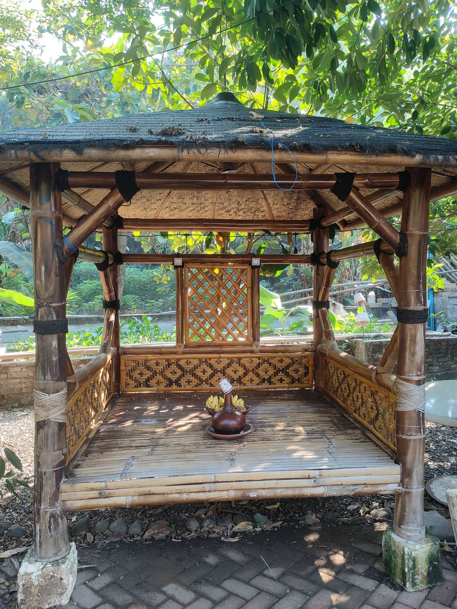
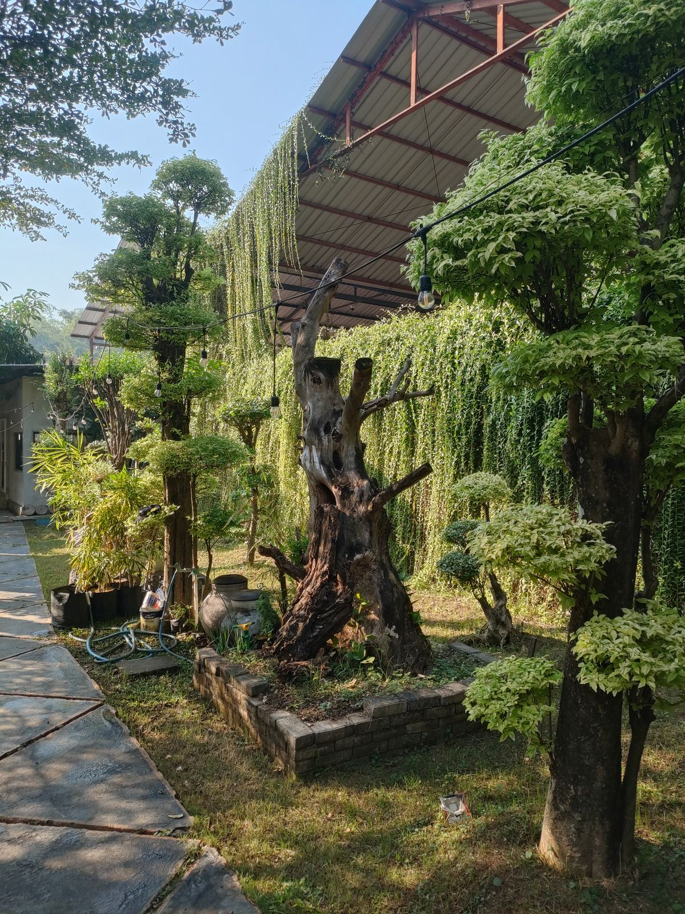
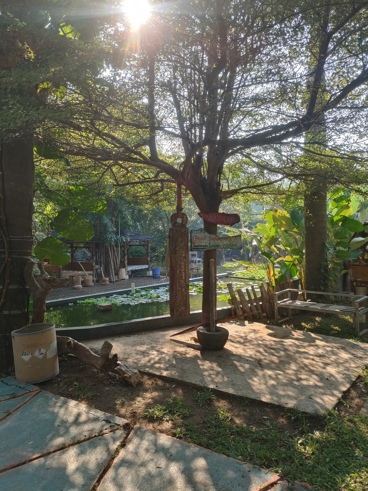

Profil Yayasan
Pendidikan Peduli Lingkungan dan Sosial Indonesia
Tentang Kami
Yayasan Pendidikan Peduli Lingkungan dan Sosial Indonesia (PPLSI) diinisiasi sejak tahun 2014 sebagai gerakan pendidikan kemasyarakatan yang berfokus pada isu sosial, lingkungan, dan literasi berbasis kearifan lokal. Yayasan ini berkomitmen membangun kesadaran kolektif dan kemandirian masyarakat melalui program pendidikan non-formal, kolaborasi lintas sektor, dan pemberdayaan komunitas.
Struktur & Kepemimpinan Yayasan
Yayasan dikelola secara profesional, transparan, dan akuntabel melalui struktur organisasi yang jelas sesuai ketentuan perundang-undangan.
Pembina Yayasan
Berperan dalam penetapan arah kebijakan umum dan pengawasan terhadap visi serta nilai dasar yayasan.
Pengurus Yayasan
Bertanggung jawab atas pengelolaan program, operasional, dan keberlanjutan kegiatan pendidikan serta sosial.
Pengawas Yayasan
Mengawasi tata kelola, keuangan, dan kepatuhan yayasan terhadap prinsip akuntabilitas dan transparansi.

Informasi Unit Yayasan
Nama Yayasan:
Yayasan Pendidikan Peduli Lingkungan dan Sosial Indonesia
Status Badan Hukum:
Yayasan (Terdaftar Kemenkumham RI)
Legalitas:
AHU No. 0002310.AH.01.04 Tahun 2017
Tanggal Pendirian:
Tahun 2017
Tahun Inisiasi Kegiatan:
2014
Domisili:
Desa Slempit, Kecamatan Kedamean,
Kabupaten Gresik, Provinsi Jawa Timur
Visi Yayasan
Tumbuh dan berkembang bersama masyarakat melalui pendidikan kemasyarakatan yang berpijak pada kearifan lokal, kepedulian sosial, dan keberlanjutan lingkungan.
Misi Yayasan
- Mengembangkan pembelajaran aktif dan bermakna
- Menanamkan nilai karakter dan budaya positif
- Mendorong prestasi akademik dan non-akademik
- Menciptakan lingkungan sekolah yang aman dan inklusif
Sejarah & Perjalanan Yayasan
Yayasan ini berawal dari kepedulian terhadap kebutuhan pendidikan masyarakat di wilayah Kedamean dan sekitarnya. Sejak tahun 1985, yayasan secara konsisten mendukung penyelenggaraan pendidikan dasar yang berkualitas, berorientasi pada pembentukan karakter dan nilai kebangsaan.
Seiring perkembangan zaman, yayasan terus beradaptasi dengan tantangan pendidikan modern melalui peningkatan mutu pengelolaan, penguatan sumber daya manusia, serta kolaborasi dengan berbagai pihak. Perjalanan ini menjadi fondasi kuat dalam membangun kepercayaan publik dan keberlanjutan lembaga pendidikan yang dikelola.
Peta Jalan Program Unggulan
Alur pengembangan program yayasan dari penguatan kapasitas, pemetaan masalah, hingga implementasi dan evaluasi dampak bagi masyarakat secara berkelanjutan.
Training Activities
Pembekalan kapasitas melalui pelatihan daring & luring dengan modul dasar dan spesialisasi.
Problem Mapping
Pemetaan masalah, penentuan target early adopters, serta validasi bersama mentor ahli.
Solution Development
Perumusan konsep, pembuatan prototipe, uji solusi, dan validasi dampak awal.
Project Execution
Implementasi solusi pada skala lebih luas dengan kolaborasi multipihak.
Impact & Evaluation
Pengukuran dampak, evaluasi menyeluruh, dan pelaporan sebagai dasar replikasi.
Membangun Generasi Berkarakter Selama Lebih dari 30 Tahun
Membentuk moral, kebangsaan, dan karakter luhur melalui pengelolaan lembaga pendidikan yang profesional, inklusif, dan berorientasi pada masa depan.

Komitmen Nyata dalam Membangun Pendidikan
Video ini merekam perjalanan, aktivitas, serta keterlibatan yayasan dalam mendukung dunia pendidikan melalui kolaborasi, pengabdian, dan pembangunan ekosistem belajar yang berkelanjutan.
Dokumentasi ini menjadi bagian dari transparansi dan rekam jejak yayasan dalam menjalankan perannya bagi masyarakat dan generasi masa depan.